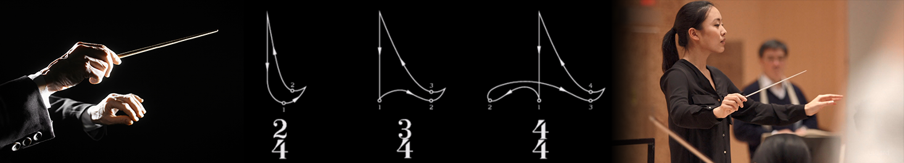
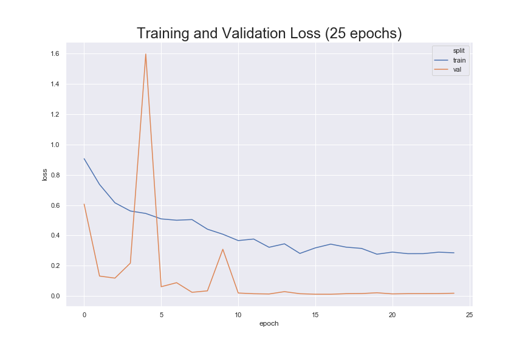

Predicting time signature from musical conducting using pattern classification with accumulator matrix
Raghavasimhan Sankaranarayanan, Kaushal Sali, Christopher Dixon, Phong Tran Fall 2019 CS 6476 Computer Vision: Class Project Georgia Tech
Abstract
In music, conducting is the art of directing the simultaneous performance of several players or singers by the use of gesture [1]. A conductor provides visual cues which help the orchestra to play in time and provide information about the variations in dynamics of sound. These visual cues are analogous to hand gestures. In order for a machine or a robot to interact with a human player or with an orchestra, they need a way to understand a conductor's cues in real-time. One common cue that needs to be understood is the time signature of the piece. The time signature indicates the number of beats in each measure in a piece of music. Conductors use different gestures to denote different time signatures. We took a subset of commonly used time signatures (2/4, 3/4, 4/4) and classify them within a video stream of a conductor performing in real-time. With our method, we obtained an average accuracy of about 95.641% with the dataset that includes recording ourselves conducting and also conducting videos from youtube.

Introduction
In our project, we present a novel method for automatically detecting three of the most common time signatures in musical conducting (2/4, 3/4, 4/4). Our method utilizes a series of Computer Vision capabilities, namely the OpenPose pose-estimation framework and a downstream image classifier which receives pose coordinates from the conductor's gestures as input. Our method detects the correct time signature gesture with high accuracy. In the following summary, we describe in detail our proposed method and present the results of our research experiments. Lastly, we suggest further research opportunities utilizing our method.
Approach
We used the data driven approach to solve the problem. This is because modelling the movement patterns mathematically is very difficult and won't be effective due to large variations in the patterns - noise. We trained a ResNet18[2] model with accumulator matrices which embed the movement patterns. Note that we will refer to a complete time-signature pattern as gesture in the future. The accumulator matrix is formed by using votes for each point in the matrix that correspond to the spacial movement of the wrist as captured by the images over time (this is discussed in detail in preprocessing). The wrist points are detected using CMU's openpose model [3]. We would also perform polynomial interpolation to fix discontinuity in detection of wrist points. The network will be trained to classify these patterns and predict the time signature.
Experiments and Results
Data Collection
For each time signature, we recorded approximately 15 minutes of footage (480p, 30fps) of ourselves performing the corresponding gesture. We then used OpenPose[5] to extract the x and y coordinates of our wrists in each video.
Data Cleaning and blocking
The data that we recieve from OpenPose is noisy. Sometimes OpenPose is not able to detect the wrists and so gives output as 0 for x and y coordinates. If the time for which the wrists are not detected is larger then we remove these coordinates. The data was then blocked into chunks to include 1 full cycle of the pattern. This ensures each accumulator matrix would have one full cycle of the gesture pattern.
Creating Accumulator Matrices
Once we blocked the data, we created an accumulator matrix like representation for the motion that was traced by the point in each block. We then normalized the spread of the pose points in the accumulator matrix to a 500x500 matrix to reduce the effects of scale on classification. The normalized accumulator matrix was saved as a 500x500 pixel image to prepare it for use in our deep learning model. We computed one matrix for each block. The video below shows the generated accumulated matrices for all the csv files.
Additional Processing
The conducting gestures can be performed with either hand, so we also saved a horizontally flipped copy of each accumulator matrix image.
Training
As we did not have enough data to train a model from scratch, we used the transfer learning technique to train a pretrained Resnet18. It was pretrained on the ImageNet dataset. We initialized and trained only the fully connected layer, retaining the convolutional layers from the pretrained model. Since this is a classification problem, we used the cross-entropy loss function. We used Adam for the optimization with a learning rate of 0.001. We also used a LRScheduler to step down the learning rate every 7 epochs by 0.1. We augemented the data by shifting and scaling the accumulator matrices randomly to reduce overfitting and to improve generality.
Evaluation
To evaluate the model performance, we used the Support Vector Machines as our baseline. We used scikit-learn's[4] implementation of SVM. With the default parameters, we obtained an overall accuracy of 83.6%. The prediction accuracy per class were 69.23%, 87.69%, 86.15% for 2/4, 3/4 and 4/4 respectively. The resnet model performed better with an overall accuracy of about 95.641%. The confusion matrix for the classification is show in Fig 1. The loss curve is shown in Fig 2. This curve trend suggests the model is not overfitting.
Fig 2 Training and validation loss

Fig 1 Confusion Matrix for the resnet18 model
2/4
3/4
4/4
Accuracy
2/4
118
10
20
0.907692
3/4
4
125
1
0.961538
4/4
0
0
130
1.000000
Qualitative results
Here are examples of our model being used to predict gestures based on a time series of point data. It can be seen that the model classifies the data correctly in most cases. Some failure and fluctuations can be notices in the 2/4 demo video especially. This could be due to the pattern being in close proximity with that of the patterns in 3/4 and 4/4.
2-4 Time Signature
3-4 Time Signature
4-4 Time Signature
Conclusion and Future work
In this project, we proposed an efficient technique to classify the most common time signatures (2/4, 3/4, 4/4) used in music. We trained a pre-trained resnet18 model to classify gestures using the accumulator matrix that were created from the x, y coordinates of the hand positions.
Our next step would be to include more time signatures such as the 5/4, 6/8, etc. We would also like to experiment more on the minimum required block size to successfully classify the gesture instead of using one cycle of pattern. The jittery output that we notice in ther video is because there is no temporal coherence between the predictions. We would include recurrent architectures that enable learning temporal data to reduce the jitteriness in prediction.
The proposed method can be applied to robotics where the robot musician have to synchronize to the human player. It can also be used as an educative tool to teach the art of conducting!
References
The Art of Conducting (Garden City, New York: Doubleday, 1959); English edition as The Conductor: His Artistry and Craftsmanship (London: G. Bell & Sons, 1961).
He, K., Zhang, X., Ren, S., & Sun, J. (2016). Deep residual learning for image recognition. In Proceedings of the IEEE conference on computer vision and pattern recognition (pp. 770-778).
Cao, Zhe, et al. "OpenPose: realtime multi-person 2D pose estimation using Part Affinity Fields." arXiv preprint arXiv:1812.08008 (2018).
API design for machine learning software: experiences from the scikit-learn project, Buitinck et al., 2013.